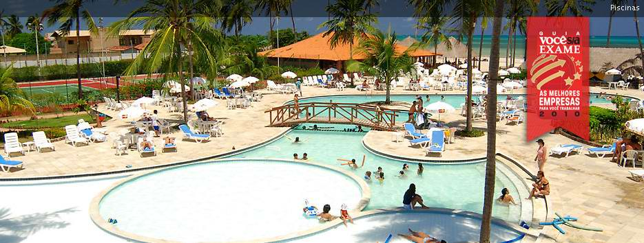
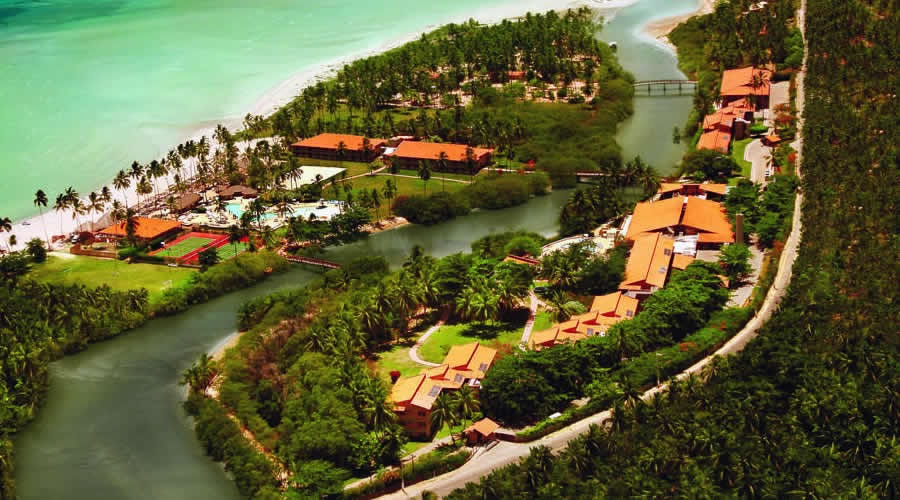
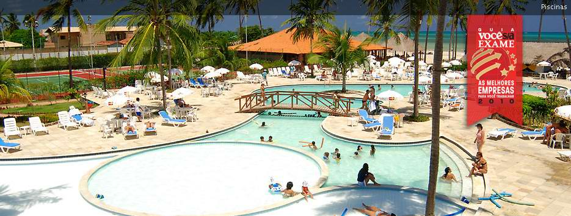
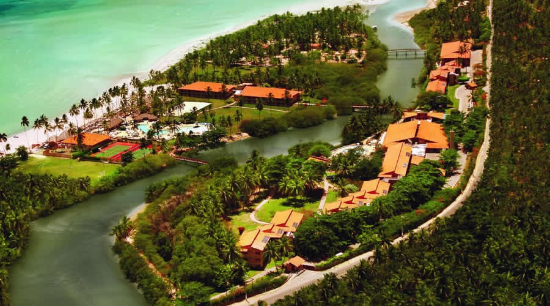
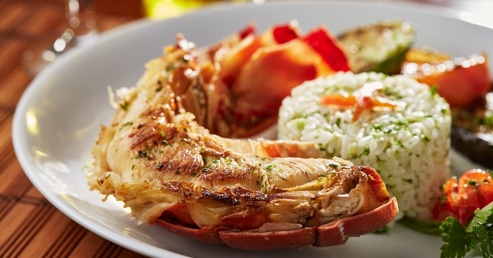
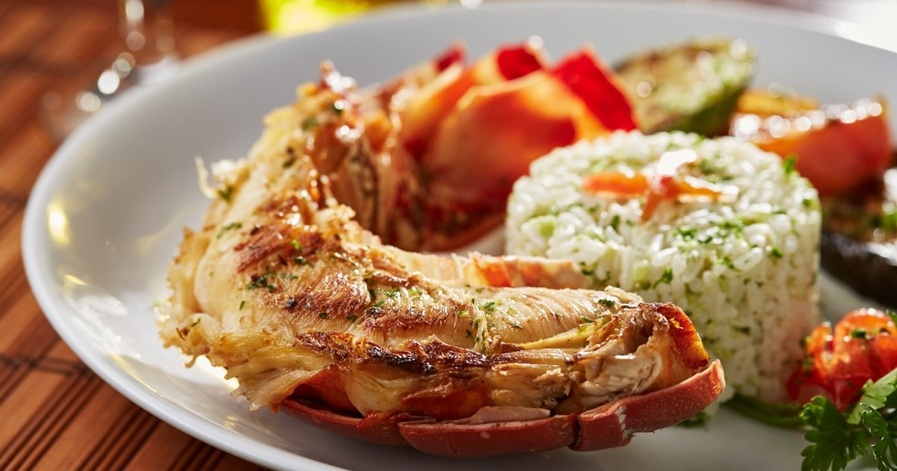

All units at the resort come with a seating area and a flat-screen TV with cable channels. Every room has a private bathroom with a shower. All rooms at Salinas Maragogi All Inclusive Reso include air conditioning and a desk.A buffet breakfast is served each morning at the property.The accommodation offers a children's playground.When guests need guidance on where to visit, the reception will be happy to provide advice.Barra Grande Beach is 3.1 miles from Salinas Maragogi All Inclusive Resort. The nearest airport is Maceio/Zumbi dos Palmares International Airport, 51 miles from the property. .
One of the best resorts in northeastern Brazil, Salinas Maragogi All Inclusive Resort features 236 rooms on 66 square meters, with recreational options for the whole family get in tune with nature!
Rating:
Rodovia Al 101 NorteKm 124
Maragogi
State of Alagoas 57955-000
Brazil
Nearest Airport: Zumbi dos Palmares International Airport
Price: £7879 per person(Includes Accomodation)
Services within the package:
Featuring a garden, Salinas Maragogi All Inclusive Resort is located in Maragogi, 1 miles from Maragogi Beach. Boasting a 24-hour front desk, this property also provides guests with a children's playground. The resort provides sea views, a terrace, and free WiFi is available.
Spa
Water Skiing
Tennis
Scuba Diving
Golf
Tennis
Five.jpg) 



 

Standard Suite:
Offering an excellent cost-benefit ratio in a floor area of up to 29 m², Standard Rooms are recommended for couples with a child or three adults. All Standard Rooms are located before the river, in blocks 1, 2 or 3. All rooms have air conditioning, a mini bar, a digital safe, complimentary Wi-Fi, a 32” Led TV, a balcony, among other amenities and comfort items. The rooms have views of the resort gardens, mangroves or Maragogi River. Some are adapted to receive people with special needs.
Large Suite:
Rooms are very close to the sea and have a fixed configuration of two double beds. Sleeps up to four guests. Close to the baby corner, two children stay for free.
Located in Block 5, all Large Rooms are close to the beach, lower swimming pools and Coral Bar. Rooms have a fixed configuration of two double beds in a 32 square-meter area offering the best cost-benefit ratio for families with two children or those who want to stay close to the sea. All rooms have air conditioning, a mini bar, a digital safe, complimentary Wi-Fi, a 32” Led TV, a balcony, among other amenities and comfort items. It’s not a direct view of the sea, but of the lower pools or gardens, depending on its location. Up to two children stay for free in a Beach Room, and any of these rooms are close to the baby corner, which make them a great choice for families.
Master Suite:
Master Suites are considered moderate rooms at Salinas Maragogi. Large 44 m2 rooms, Master Suites offer more comfort and space at a price a little lower than the other suites. Rooms feature an anteroom integrated to the room and a 42” HD satellite LED TV (Sky HDTV). In addition to Natura Ekos amenities and a king-size bed, the bathroom features two sinks, ensuring greater comfort to couples or families. The units are located in blocks 1 and 2, and have River or Garden view. It’s an excellent honeymoon choice and costs less than the Beach Suite. Note: When occupied by more than 2 guests, the beds will be allocated in the Anteroom
Save to Favourites